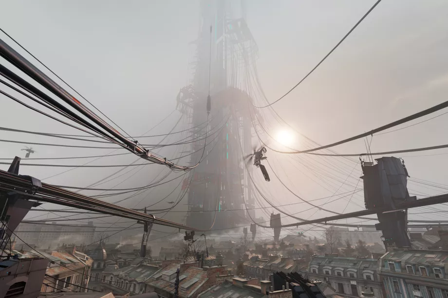

Half-Life 2 is one of the last things that makes me feel like a fan, and that’s why I was afraid of Half-Life: Alyx.
Writing about video games changed my relationship with the medium. I’m used to analyzing exactly why I like my favorite games. Meeting developers has helped me see their work as an idiosyncratic human creation, not a magical self-contained artifact. I’ve encountered the worst of fan culture, and it’s made me wary of deep, unconditional, inarticulable loyalty to media
For some reason, though, Half-Life 2 and its follow-up episodes are special. They’re not my favorite games, or even my favorite Half-Life games. Like a robot short-circuiting while trying to articulate the concept of love, I’m incapable of explaining my deep investment in the story of a crowbar-wielding physicist named Gordon Freeman fighting an oppressive alien regime with his tech-genius partner Alyx Vance. But I played the games in college, and I somehow developed the kind of obsession that leads you down a rabbit hole of Garry’s Mod fan comics because you just want to be around more Half-Life. A decade later, long after I gave up on the fabled Half-Life 3, Gordon and Alyx still felt like old friends.
When Valve announced Half-Life: Alyx for virtual reality, promising a Half-Life 2 prequel that would address the series’ cliffhanger ending, I knew I’d end up reviewing it. And part of me dreaded the prospect. At worst, the game might be terrible. Even if it was okay, I worried encountering a new Half-Life game would expose my fandom as simple nostalgia — something I could remember feeling, but only enjoy as an echo from a decade ago.
And again, I can logically explain why Alyx is great, but not quite why it makes me so happy. 2020 has offered lots of strong contenders for the year’s best games; I’m certainly on board with universally beloved picks like Hades or the creepy and narratively innovative World of Horror. But Alyx is the only game that lets me hang out with a mystical three-armed alien before getting my face eaten by a headcrab, and that feels just as good as I remember.
Comment Here